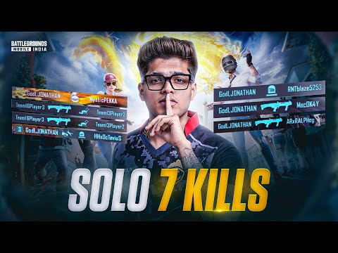
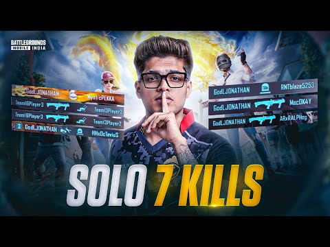

BIO-2
JONATHAN

 

Jonathan Amaral (born 21 September 2002), known professionally as Jonathan Gaming, is an Indian professional esports player known for playing Battlegrounds Mobile India (BGMI) & Pubg Mobile(PUBGM).[4][5][6][7] During the 2022 Esports Award, Amaral came in second place in the Esports Mobile Players of the Year category.[8] FanClash, an esports fantasy platform, announced in 2023 that Amaral will be serving as their new brand ambassador.,[9][10] In a livestream on 16 November 2023, Jonathan announced him as an official Red Bull Player. [11][12] He also participated in Redbull Soapbox Event representing Godlike Esports which they eventually lost to S8UL Esports as their car wasn't good enough to reach the finish line.